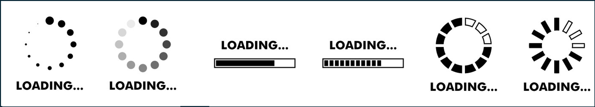

📚 MDM EDA Walkthrough
Welcome to Lesson 7! This is where we transition from discussing MDM conceptually to actively analyzing real-world misinformation data using Python.
In this lesson, we will conduct an exploratory data analysis (EDA) to uncover trends in misinformation engagement on social media.
🗂️ What’s in Our Dataset?
To simulate real-world challenges in misinformation research, our dataset has been modified to include:
Each of these modifications will prompt us to ask key questions about data reliability, preprocessing strategies, and analysis validity.
🛠️ What Will We Do in This Lesson?
This walkthrough is designed to guide you through the decision-making process of EDA, with a focus on real-world application. We will:
🔍 Examine dataset structure – What information do we have? What’s missing?
📊 Explore summary statistics and trends – How is misinformation engagement distributed?
🧹 Discuss data cleaning considerations – How do preprocessing choices impact analysis?
This is not just about running code—it’s about thinking critically about our data and analysis choices.
🚀 Preparing for the Next Step
This lesson is application-focused, guiding you through the questions and reasoning behind misinformation data analysis.
💡 In the upcoming assignment, you will apply these concepts through hands-on coding.
By the end of this walkthrough, you’ll be ready to write your own Python code to conduct an EDA on misinformation engagement trends.
Let’s dive in!
🅾️ Loading Data

Before diving into visualization, we first inspect the dataset to understand its shape, column types, and general properties.
To explore these properties, we’ll use pandas, one of the most powerful libraries for handling structured data. Let’s start by loading a dataset and inspecting its structure.
[1]:
# Import the pandas library
import pandas as pd
What it does: This line imports the pandas library, a powerful tool for handling and analyzing structured data (tables, CSVs, Excel files, etc.).
[2]:
# Load dataset using pandas function read_csv
df = pd.read_csv("../data/data.csv", sep='|')
What this line does: Loads a dataset named data.csv from the data folder, which is one directory up (../) from my notebook’s current location (e.g., source/notebooks). Uses the read_csv() function from pandas to open the file and convert it into a DataFrame (a table-like structure for data analysis). sep=’|’ specifies that the data is separated by pipes (|) instead of commas (,), which is useful for files that don’t use the standard CSV format. Saves the dataframe in the variable “df”
📌 What If the File Type is Different?
.tsv or .txt extensions, specifying the tab (\t) as a separator is necessary to correctly parse the data.1️⃣ Understanding Your Data
Before diving into visualization, we first inspect the dataset to understand its shape, column types, and general properties.
Display basic information about the dataset
[3]:
df.info()
<class 'pandas.core.frame.DataFrame'>
RangeIndex: 31498 entries, 0 to 31497
Data columns (total 10 columns):
# Column Non-Null Count Dtype
--- ------ -------------- -----
0 user_id 31498 non-null object
1 tweet_id 31498 non-null object
2 likes 15000 non-null float64
3 shares 15000 non-null float64
4 comments 15000 non-null float64
5 followers 31496 non-null float64
6 timestamp 31496 non-null object
7 language 15000 non-null object
8 location 27941 non-null object
9 label 31498 non-null object
dtypes: float64(4), object(6)
memory usage: 2.4+ MB
What this line does**: provides a concise summary of a dataframe including:
total number of entries (or rows of data)
number of columns
column names
number of non-null (non-missing) values in each column
data types of each column
approximate memory usage of the dataframe
What can we tell about the data from this:
There are 31498 rows of twitter data here with the following 9 column names: user, tweet, likes, shares, comments, followers, timestamps, language, and location
There are missing values in most columns and approximately half of entries are missing likes, shares, comments, and language
Likes, shares, comments, and followers are all numerical (float)
Timestamp column is currently stored as the data type “object” and may need to be converted to datetime for time-based analysis
Display the first 5 rows of data
[4]:
df.head()
[4]:
| user_id | tweet_id | likes | shares | comments | followers | timestamp | language | location | label | |
|---|---|---|---|---|---|---|---|---|---|---|
| 0 | user_id_1 | tweet_id_1 | 435.0 | 80.0 | 26.0 | 2793.0 | 2021/08/25 15:56:00 | English | London, UK | Fake |
| 1 | user_id_2 | tweet_id_2 | 453.0 | 111.0 | 89.0 | 2524.0 | 2022/07/10 14:43:31 | English | Johannesburg, South Africa | Fake |
| 2 | user_id_3 | tweet_id_3 | NaN | NaN | NaN | 6380.0 | 2021-07-17 21:13:46 | NaN | Melbourne, Australia | Fake |
| 3 | user_id_4 | tweet_id_4 | NaN | NaN | NaN | 399.0 | 2021-01-21 22:53:25 | NaN | Does it matter? | Fake |
| 4 | user_id_5 | tweet_id_2 | 108.0 | 88.0 | 41.0 | 362.0 | 2021-11-09 10:50:00 | English | New York, USA | Fake |
🔍 Key Observations from ``df.head()``
After displaying the first few rows of the dataset, we can make several key observations regarding the data structure, potential issues, and areas for further analysis.
1️⃣ Missing Values Present
Some rows have missing values (
NaN), particularly in thelikes,shares,comments, andlanguagecolumns.This suggests that some tweets do not have engagement metrics recorded, possibly due to data collection inconsistencies or missing records.
The
languagecolumn also contains missing values, meaning some tweets may lack detected language data.
✅ Next Steps: Investigate why these values are missing and determine whether to fill them with default values, impute them, or remove those rows.
2️⃣ Timestamp Data Needs Conversion
The
timestampcolumn contains date and time information in various formats.Some timestamps are YYYY/MM/DD HH:MM:SS format, while others have YYYY-MM-DD HH:MM:SS.
This data should be converted to ``datetime`` format for accurate time-based analysis.
✅ Next Steps: Standardize the timestamp format and analyze trends over time (e.g., peak misinformation periods).
3️⃣ Location Data is Inconsistent
The
locationcolumn contains both specific places and vague responses:“London, UK”, “Johannesburg, South Africa”, and “Melbourne, Australia” are valid geographic locations.
“Does it matter?” is not a valid location and may require filtering or categorization.
✅ Next Steps: Clean the location column by:
Standardizing formats (e.g., separating country and city).
Handling vague responses or missing values appropriately.
4️⃣ Varying Engagement Metrics
Some tweets have high engagement (
likes,shares,comments), while others have missing engagement data.Example:
The tweet from user_id 2 has 453 likes, 111 shares, and 89 comments (high engagement).
The tweet from user_id 3 has NaN for likes, shares, and comments (missing engagement).
Tweets with controversial content may receive higher engagement.
✅ Next Steps: Perform statistical analysis on engagement levels and whether misinformation tweets tend to receive more interactions.
5️⃣ Differences in Followers Count
The
followerscolumn shows varying audience sizes:user_id 3 has 6,380 followers.
user_id 4 has only 399 followers.
The follower count might influence engagement—tweets from users with more followers might have more interactions.
✅ Next Steps: Investigate the relationship between follower count and tweet engagement to see if higher follower numbers correlate with more likes, shares, or comments.
🚀 Summary of Key Findings & Recommended Actions
Issue |
Observation |
Recommended Action |
|---|---|---|
Missing Values |
|
Handle missing data via imputation or removal. |
Timestamp Formatting |
Different timestamp formats are present. |
Convert to datetime format for time-based analysis. |
Inconsistent Locations |
Some entries contain valid locations, while others are vague. |
Standardize and clean the |
Engagement Disparity |
Some tweets have high likes, shares, and comments, while others have none. |
Analyze misinformation virality trends. |
Followers Count Variance |
Users have different audience sizes, influencing tweet visibility. |
Investigate correlation between followers and engagement. |
2️⃣ Handling Missing Values
🔍 Identifying Missing Data From our previous df.info() analysis, we found missing values in multiple columns:
``likes``, ``shares``, ``comments`` (missing for about half the dataset).
``language`` (missing for a significant number of tweets).
``location`` (some vague or missing entries).
likes, shares, comments | Some tweets have no engagement data. | Leave as null or Fill missing values with 0 (assuming no engagement). | | language | Some tweets lack language detection. | Use text-based language detection or mark as "Unknown". | | location | Some users did not provide locations. | Mark as "Unknown" or
categorize as "Unspecified". |🔍 Handling Missing Values in Our Data
Handling missing values is an essential part of data preprocessing. Instead of removing missing data entirely, we must decide the best strategy for each column based on its significance and the nature of the data.
2️⃣ Filling Missing Values in ``language`` with ``’Unknown’``
[6]:
df['language'] = df['language'].fillna('Unknown')
This line of code replaces all missing values (NaN) in the language column with ‘Unknown’.
✅ Why is this a good approach?
Prevents dropping useful rows: If we removed rows with missing languages, we might lose valuable engagement and content data.
Maintains categorical consistency: Instead of having null values, which may cause issues in categorical analysis, we explicitly mark unknown entries.
Helps during filtering and analysis: Analysts can easily filter for “Unknown” languages and decide how to handle them later.
✅ Action Taken: Replace missing values in language with ‘Unknown’.
3️⃣ Filling Missing Values in location with ‘Unspecified’
[7]:
df['location'] = df['location'].fillna('Unspecified')
This line replaces all NaN values in the location column with ‘Unspecified’.
✅ Why is this a good approach?
Retains valuable tweet data: Removing rows with missing locations would result in unnecessary data loss.
Standardizes missing location data: Instead of leaving blank values, “Unspecified” makes it clear that the location is unknown.
Useful for geographical analysis: Analysts can easily group “Unspecified” locations separately from real locations.
✅ Action Taken: Replace missing values in location with ‘Unspecified’.
3️⃣ Exploring Distributions
Understanding the spread of numerical data helps us detect skewness, outliers, and potential transformations needed.
[8]:
#Import required libraries
import matplotlib.pyplot as plt
import seaborn as sns
# Plot histograms for numerical columns
df[['likes', 'shares', 'comments', 'followers']].hist(figsize=(12, 8), bins=20)
plt.show()
🔍 Key Observations:
1️⃣ Highly Skewed Distributions
All four variables appear highly right-skewed, meaning most values are concentrated at the lower end of the scale with a few extreme outliers.
This is common in social media data where a small percentage of posts get very high engagement while most receive little to no interaction.
2️⃣ Likes, Shares, and Comments Are Heavily Clustered at Low Values
The vast majority of tweets have very few likes, shares, and comments.
There are some extreme values (outliers) that are likely from viral tweets.
The long right tail suggests that log transformation may be useful for better visualization.
3️⃣ Followers Distribution Shows a Similar Trend
Most users have very few followers, but a few accounts have millions of followers.
This aligns with the power law distribution of social media, where a small number of influencers dominate engagement.
📌 Next Steps: How to Handle These Distributions?
✅ Consider Log Transformation: Applying log(1 + x) to likes, shares, comments, and followers can reduce skewness and make patterns more interpretable.
[9]:
#Import required libraries
import numpy as np
#Log transform the 4 numeric variables in the dataset
df['likes_log'] = np.log1p(df['likes'])
df['shares_log'] = np.log1p(df['shares'])
df['comments_log'] = np.log1p(df['comments'])
df['followers_log'] = np.log1p(df['followers'])
# Plot histograms for log transformed columns
df[['likes_log', 'shares_log', 'comments_log', 'followers_log']].hist(figsize=(12, 8), bins=50)
plt.show()
Key Improvements in Distribution
✅ Reduced Skewness
The original histograms showed extreme right skewness (high concentration at low values with a long right tail).
After log transformation, the data appears more balanced, helping make statistical analyses and visualizations more meaningful.
✅ More Normal-Like Shape
The transformed variables now resemble a bell-shaped or Gaussian-like distribution, particularly for followers_log.
This improves the effectiveness of correlation analysis, regression modeling, and clustering techniques.
✅ Better Comparability Between Small & Large Values
In the raw data, tweets with few likes were barely visible compared to viral tweets.
Log transformation compresses extreme values, allowing for better visual contrast between lower- and higher-engagement tweets.
Observations on Specific Variables
likes_log, shares_log, and comments_log still somewhat skewed but much more interpretable than before. The peak around log(6) (~400 likes/shares/comments in raw scale) suggests a common engagement level for many tweets.
followers_log now appears more symmetrical, resembling a normal distribution. This transformation is especially useful, given that some users have millions of followers while most have fewer than 10,000.
📌 Next Steps: How to Use This Transformed Data?
This is just for your knowledge and is considered intermediate level analysis so we won’t dive too deeply into this.
✅ Use log-transformed features in correlation and regression analysis
✅ Apply standardization (z-scores) for modeling
✅ Explore Engagement Patterns by User Type
✅ Feature Engineering Considerations:
Should we create an engagement_score using a weighted combination of likes_log, shares_log, and comments_log?
Should we segment users into low-, mid-, and high-follower groups based on followers_log?
4️⃣ Handling Outliers
df.describe() results:``likes``, ``shares``, ``comments`` – The maximum values are much higher than the 75th percentile, indicating possible viral tweets or outliers.
``followers`` – The maximum value (16M followers) is an extreme outlier compared to the median (1,662 followers).
Visualizing Outliers
With our log-transformed our numerical variables, we will use boxplots to visualize outliers and detect extreme values in likes, shares, comments, and followers.
🔍 Why Use Boxplots?
Boxplots help detect outliers by showing the interquartile range (IQR) and marking values that lie far beyond the whiskers.
They provide a quick comparison of engagement distributions across different features.
Outliers may indicate viral content or influential users, so understanding their impact is crucial.
[10]:
import seaborn as sns
import matplotlib.pyplot as plt
# Define numeric columns to visualize
engagement_metrics = ['likes_log', 'shares_log', 'comments_log', 'followers_log']
# Create boxplots
plt.figure(figsize=(10, 6))
sns.boxplot(data=df[engagement_metrics])
plt.title("Boxplots of Log-Transformed Engagement Metrics")
plt.show()
✅ Strategies for Handling Outliers
Column |
Outlier Issue |
Recommended Solution |
|---|---|---|
|
Viral tweets skew engagement distribution. |
Leave as is (high engagement indicates influencers). |
|
Large accounts distort analysis. |
Leave as is (reflects real-world social influence). |
✅ Why We Are Keeping Outliers Instead of removing or modifying extreme values, we will leave them as they are because:
Influencers and viral tweets drive engagement – High values in
likes,shares, andcommentsrepresent organic trends in social media activity.Large follower counts reflect real-world dynamics – Social media has accounts with millions of followers, and excluding them would misrepresent the data.
Log transformations or capping could distort insights – Instead of suppressing outliers, we should analyze how they impact engagement patterns.
❌ When Keeping Outliers Might Not Be the Best Option
In some cases, keeping extreme outliers could negatively impact the analysis:
1️⃣ If Outliers Are the Result of Data Collection Errors
Example: If a dataset mistakenly records 1 billion followers for an average user, it would distort statistical summaries.
Better Approach: Identify data entry errors and either correct or remove them.
2️⃣ If Outliers Skew Statistical Models
Example: If performing linear regression on engagement vs. followers, a few extreme influencer accounts could dominate the model, leading to misleading predictions.
Better Approach: Apply log transformation to make the distribution more normal.
3️⃣ If We Are Analyzing Typical User Behavior
Example: If we want insights into the average user’s engagement, keeping influencers in the dataset could lead to incorrect generalizations.
Better Approach: Winsorization (capping extreme values) or filtering out top 1% influencers.
5️⃣ Standardizing Data Types
🔍 Issues with Data Types
``timestamp`` is stored as an object instead of a
datetimeformat.``followers`` is stored as
float64but could be optimized.
timestamp | Stored as a string. | Convert to datetime format. | | followers | Stored as float64. | Convert to int64 (if no decimal values exist). |[11]:
df
[11]:
| user_id | tweet_id | likes | shares | comments | followers | timestamp | language | location | label | likes_log | shares_log | comments_log | followers_log | |
|---|---|---|---|---|---|---|---|---|---|---|---|---|---|---|
| 0 | user_id_1 | tweet_id_1 | 435.0 | 80.0 | 26.0 | 2793.0 | 2021/08/25 15:56:00 | English | London, UK | Fake | 6.077642 | 4.394449 | 3.295837 | 7.935230 |
| 1 | user_id_2 | tweet_id_2 | 453.0 | 111.0 | 89.0 | 2524.0 | 2022/07/10 14:43:31 | English | Johannesburg, South Africa | Fake | 6.118097 | 4.718499 | 4.499810 | 7.833996 |
| 2 | user_id_3 | tweet_id_3 | NaN | NaN | NaN | 6380.0 | 2021-07-17 21:13:46 | Unknown | Melbourne, Australia | Fake | NaN | NaN | NaN | 8.761080 |
| 3 | user_id_4 | tweet_id_4 | NaN | NaN | NaN | 399.0 | 2021-01-21 22:53:25 | Unknown | Does it matter? | Fake | NaN | NaN | NaN | 5.991465 |
| 4 | user_id_5 | tweet_id_2 | 108.0 | 88.0 | 41.0 | 362.0 | 2021-11-09 10:50:00 | English | New York, USA | Fake | 4.691348 | 4.488636 | 3.737670 | 5.894403 |
| ... | ... | ... | ... | ... | ... | ... | ... | ... | ... | ... | ... | ... | ... | ... |
| 31493 | user_id_14427 | tweet_id_16511 | NaN | NaN | NaN | 1011.0 | 2021-08-02 23:05:43 | Unknown | Florida | Fake | NaN | NaN | NaN | 6.919684 |
| 31494 | user_id_1723 | tweet_id_2 | 86.0 | 22.0 | 15.0 | 4237.0 | 2020-01-22 05:30:00 | English | Paris, France | Fake | 4.465908 | 3.135494 | 2.772589 | 8.351847 |
| 31495 | user_id_100 | tweet_id_2 | 259.0 | 297.0 | 48.0 | 2593.0 | 2020-10-07 19:57:00 | English | Sydney, Australia | Fake | 5.560682 | 5.697093 | 3.891820 | 7.860956 |
| 31496 | user_id_14428 | tweet_id_16512 | NaN | NaN | NaN | 107.0 | 2021-02-01 21:11:40 | Unknown | seattle | Fake | NaN | NaN | NaN | 4.682131 |
| 31497 | user_id_14429 | tweet_id_16513 | NaN | NaN | NaN | 1673.0 | 2021-01-13 15:52:38 | Unknown | The Bend, IN | Fake | NaN | NaN | NaN | 7.422971 |
31498 rows × 14 columns
[12]:
# Standardize separators by replacing '/' with '-'
df['timestamp'] = df['timestamp'].str.replace("/", "-", regex=False)
# Convert to datetime format
df['timestamp'] = pd.to_datetime(df['timestamp'], errors='coerce', format="%Y-%m-%d %H:%M:%S")
🔍 Explanation of the Code
pd.to_datetime(df[‘timestamp’]) Converts the timestamp column from an object (string) to a datetime format (datetime64[ns]).
errors=’coerce’ If a value in timestamp is invalid (e.g., not a real date), it is replaced with NaT (Not a Time, pandas’ equivalent of NaN for datetime).
Now that we’ve standardized our timestamp column to a proper datetime format, I’d like to introduce feature engineering.
📌 Why is this important?
Raw datetime values provide limited insight on their own.
By extracting meaningful components (e.g., hour of the day, day of the week, or month), we can uncover patterns in engagement.
This is a perfect example of feature engineering—transforming raw data into more useful variables!
Since time-based transformations are some of the most common and valuable feature engineering techniques, this is a great moment to introduce the concept.
6️⃣ Feature Engineering
✅ Why is Feature Engineering Important?
Enhances predictive power – Well-designed features help machine learning models make better predictions.
Simplifies patterns in data – By transforming or aggregating variables, we can reveal trends that might not be obvious.
Reduces noise and improves interpretability – Some raw data may be too complex or too detailed, making it harder to analyze.
Feature Engineering Task |
Example in Our Dataset |
Why It’s Useful |
|---|---|---|
Extracting time-based features |
Splitting |
Allows us to analyze engagement patterns by time. |
Creating interaction features |
Combining |
Gives a single metric to assess overall tweet performance. |
Transforming skewed data |
Applying a log transformation to |
Helps normalize extreme differences between small and large accounts. |
Grouping categorical values |
Reducing rare |
Improves generalizability and avoids overfitting. |
💡 Feature engineering is an iterative process – we don’t always know which features will be most useful at the start. Instead, we use EDA to identify opportunities for feature creation, ensuring that each transformation adds value.
We will not treat feature engineering as a separate step but instead integrate it naturally into EDA.
As we uncover insights (e.g., engagement varies by time of day), we will introduce new feature transformations to improve our dataset.
This mirrors real-world data analysis workflows, where feature engineering is informed by exploratory findings.
[13]:
# Extract useful time-based features
df['year'] = df['timestamp'].dt.year # Extract year
df['month'] = df['timestamp'].dt.month # Extract month
df['day_of_week'] = df['timestamp'].dt.dayofweek # 0 = Monday, 6 = Sunday
df['hour'] = df['timestamp'].dt.hour # Extract hour of the day
df['is_weekend'] = df['day_of_week'].apply(lambda x: 1 if x >= 5 else 0) # 1 = weekend, 0 = weekday
# Display the first few rows to check new features
df[['timestamp', 'year', 'month', 'day_of_week', 'hour', 'is_weekend']].head()
[13]:
| timestamp | year | month | day_of_week | hour | is_weekend | |
|---|---|---|---|---|---|---|
| 0 | 2021-08-25 15:56:00 | 2021.0 | 8.0 | 2.0 | 15.0 | 0 |
| 1 | 2022-07-10 14:43:31 | 2022.0 | 7.0 | 6.0 | 14.0 | 1 |
| 2 | 2021-07-17 21:13:46 | 2021.0 | 7.0 | 5.0 | 21.0 | 1 |
| 3 | 2021-01-21 22:53:25 | 2021.0 | 1.0 | 3.0 | 22.0 | 0 |
| 4 | 2021-11-09 10:50:00 | 2021.0 | 11.0 | 1.0 | 10.0 | 0 |
🔍 Breakdown of Extracted Features:
Feature |
Description |
Why It’s Useful |
|---|---|---|
``year`` |
Extracts the year (e.g., 2020, 2021) |
Helps analyze trends over time. |
``month`` |
Extracts the month (1-12) |
Identifies seasonal patterns in misinformation spread. |
``day_of_week`` |
Extracts the day (0=Monday, 6=Sunday) |
Reveals which days see more misinformation engagement. |
``hour`` |
Extracts the hour (0-23) |
Helps determine peak engagement hours. |
``is_weekend`` |
Encodes weekends as |
Useful for comparing engagement between weekends and weekdays. |
[14]:
# Map day_of_week to actual day names
day_mapping = {0: "Monday", 1: "Tuesday", 2: "Wednesday", 3: "Thursday", 4: "Friday", 5: "Saturday", 6: "Sunday"}
df['day_name'] = df['day_of_week'].map(day_mapping)
# Categorize hours into time of day bins
def categorize_hour(hour):
if 5 <= hour < 12:
return "Morning"
elif 12 <= hour < 17:
return "Afternoon"
elif 17 <= hour < 21:
return "Evening"
else:
return "Night"
df['time_of_day'] = df['hour'].apply(categorize_hour)
df[['timestamp', 'day_of_week', 'day_name', 'hour', 'time_of_day']].head()
[14]:
| timestamp | day_of_week | day_name | hour | time_of_day | |
|---|---|---|---|---|---|
| 0 | 2021-08-25 15:56:00 | 2.0 | Wednesday | 15.0 | Afternoon |
| 1 | 2022-07-10 14:43:31 | 6.0 | Sunday | 14.0 | Afternoon |
| 2 | 2021-07-17 21:13:46 | 5.0 | Saturday | 21.0 | Night |
| 3 | 2021-01-21 22:53:25 | 3.0 | Thursday | 22.0 | Night |
| 4 | 2021-11-09 10:50:00 | 1.0 | Tuesday | 10.0 | Morning |
🚀 Next Steps
Now that we’ve extracted time-based features, we can:
day_of_week, hour, and time_of_day into ML models to detect misinformation trends.7️⃣ Basic Visualizations
[15]:
# Print column list of my dataset
df.columns.tolist()
[15]:
['user_id',
'tweet_id',
'likes',
'shares',
'comments',
'followers',
'timestamp',
'language',
'location',
'label',
'likes_log',
'shares_log',
'comments_log',
'followers_log',
'year',
'month',
'day_of_week',
'hour',
'is_weekend',
'day_name',
'time_of_day']
Bar Plots
[16]:
# Count tweets per day of the week
day_counts = df['day_name'].value_counts().reindex(["Monday", "Tuesday", "Wednesday", "Thursday", "Friday", "Saturday", "Sunday"])
# Plot bar chart
plt.figure(figsize=(10, 5))
sns.barplot(x=day_counts.index, y=day_counts.values)
# Labeling
plt.title("Number of Tweets by Day of the Week", fontsize=14)
plt.xlabel("Day of the Week", fontsize=12)
plt.ylabel("Number of Tweets", fontsize=12)
plt.show()
This bar chart shows the number of tweets per day, helping us understand when misinformation tweets are most frequent.
🔍 Key Insights:
🔍 Analysis: What Does This Show?
Workdays might encourage more online discussions.
Weekends could reflect less misinformation production or moderation gaps.
Certain misinformation topics (e.g., politics, health) may trend more on weekdays.
Pie Chart
[17]:
# Count occurrences of each time of day
time_counts = df['time_of_day'].value_counts()
# Create pie chart
plt.figure(figsize=(7, 7))
plt.pie(time_counts, labels=time_counts.index, autopct='%1.1f%%', colors=['#3498db', '#2ecc71', '#e74c3c', '#f39c12'])
plt.title("Tweet Distribution by Time of Day")
plt.show()
This pie chart shows the distribution of tweets across different times of the day, helping us determine when misinformation is most active.
🔍 Key Insights:
🔍 Analysis: What Does This Show?
Potential Explanations:
Nighttime misinformation surges may be due to reduced content moderation or global audiences in different time zones.
Misinformation in the morning and afternoon may reflect news cycles and trending topics.
Different types of misinformation (political, health-related) may peak at different times.
Histogram
[18]:
import matplotlib.pyplot as plt
import seaborn as sns
# Set seaborn style
sns.set_theme(style="whitegrid")
# Plot histogram of tweets by month
plt.figure(figsize=(10, 5))
sns.histplot(df['month'], bins=12, discrete=True, kde=False, color='#3498db')
# Labeling
plt.title("Tweet Distribution by Month", fontsize=14)
plt.xlabel("Month", fontsize=12)
plt.ylabel("Number of Tweets", fontsize=12)
plt.xticks(ticks=range(1, 13), labels=['Jan', 'Feb', 'Mar', 'Apr', 'May', 'Jun', 'Jul', 'Aug', 'Sep', 'Oct', 'Nov', 'Dec'])
plt.show()
This histogram visualizes the distribution of tweets by month, helping us identify trends in misinformation spread over the year.
🔍 Key Insights:
🔍 Analysis: What Does This Show?
Potential Explanations:
Political events, elections, or crises might trigger misinformation spikes in specific months.
Some misinformation campaigns could be seasonal (e.g., health-related misinformation in flu season).
Variations in tweet volume might also reflect changes in platform moderation or fact-checking efforts.
Boxplot
[19]:
# Set seaborn style
sns.set_theme(style="whitegrid")
# Create boxplot
plt.figure(figsize=(8, 5))
sns.boxplot(x=df['likes'], color='#3498db')
# Labeling
plt.title("Boxplot of Likes", fontsize=14)
plt.xlabel("Number of Likes", fontsize=12)
plt.show()
This boxplot visualizes the distribution of likes on misinformation tweets, highlighting the central tendency, spread, and presence of extreme values.
🔍 Key Insights:
🔍 Analysis: What Does This Show?
Potential Explanations:
Misinformation might have low baseline engagement but occasional viral tweets amplify its reach.
Engagement could depend on influencers or amplification efforts (e.g., bots, coordinated sharing).
A log transformation might help normalize the distribution for better statistical analysis.
Scatter Plot
[20]:
# Set seaborn style
sns.set_theme(style="whitegrid")
# Create scatter plot
plt.figure(figsize=(8, 6))
sns.scatterplot(x=df['likes'], y=df['shares'], alpha=0.5, color='#3498db')
# Labeling
plt.title("Scatter Plot of Likes vs. Shares", fontsize=14)
plt.xlabel("Number of Likes", fontsize=12)
plt.ylabel("Number of Shares", fontsize=12)
plt.show()
This scatter plot visualizes the relationship between likes and shares on misinformation tweets, helping us assess whether high engagement in one metric predicts high engagement in the other.
🔍 Key Insights:
🔍 Analysis: What Does This Show?
Potential Explanations:
Some misinformation tweets may encourage engagement through likes but not sharing, limiting their spread.
Virality may depend on other factors (e.g., influencer amplification, trending topics, algorithmic boosts).
Further analysis could explore engagement rate per follower or time-based engagement trends.
Line Plot
[21]:
# Average engagement per hour of the day
hourly_engagement = df.groupby('hour').agg({'likes': 'mean', 'shares': 'mean', 'comments': 'mean'}).reset_index()
# Plot
plt.figure(figsize=(12, 6))
sns.lineplot(data=hourly_engagement, x='hour', y='likes', label='Likes', marker='o', color='blue')
sns.lineplot(data=hourly_engagement, x='hour', y='shares', label='Shares', marker='o', color='green')
sns.lineplot(data=hourly_engagement, x='hour', y='comments', label='Comments', marker='o', color='red')
plt.title("Average Engagement by Hour of Day")
plt.xlabel("Hour of the Day")
plt.ylabel("Average Engagement")
plt.xticks(range(0, 24))
plt.legend()
plt.show()
This line plot visualizes the average engagement (likes, shares, comments) for misinformation tweets at different hours of the day, helping us detect high-risk periods.
🔍 Key Insights:
🔍 Analysis: What Does This Show?
Potential Explanations:
Late-night engagement surges could be due to users scrolling before bedtime, when critical thinking might be lower.
Shares and comments may not correlate perfectly with likes, suggesting different engagement motivations.
Moderation and fact-checking efforts may need to be reinforced in the late evening, when misinformation engagement appears highest.
Line Plot 2
[22]:
# Convert timestamp to datetime if not already done
df['timestamp'] = pd.to_datetime(df['timestamp'], errors='coerce')
# Aggregate engagement by day
time_engagement = df.groupby(df['timestamp'].dt.date).agg({'likes': 'sum', 'shares': 'sum', 'comments': 'sum'}).reset_index()
# Plot engagement over time
plt.figure(figsize=(12, 6))
plt.plot(time_engagement['timestamp'], time_engagement['likes'], label='Likes', color='blue')
plt.plot(time_engagement['timestamp'], time_engagement['shares'], label='Shares', color='green')
plt.plot(time_engagement['timestamp'], time_engagement['comments'], label='Comments', color='red')
plt.title("Engagement Trends Over Time")
plt.xlabel("Date")
plt.ylabel("Total Engagement")
plt.legend()
plt.xticks(rotation=45)
plt.show()
This line plot visualizes the total engagement (likes, shares, and comments) on misinformation tweets over time, helping us identify significant peaks and long-term patterns.
🔍 Key Insights:
🔍 Analysis: What Does This Show?
Potential Explanations:
Peaks may coincide with pandemic misinformation waves, elections, or geopolitical crises that drive engagement.
Likes are easier than shares/comments, leading to more passive engagement rather than active amplification.
Future analysis could focus on annotating peaks with real-world events to better understand misinformation drivers.
🎯 Lesson Summary & Key Takeaways
In this lesson, we walked through the critical thinking process behind exploratory data analysis (EDA) and applied it to misinformation engagement metrics.
💡 Key Reflections:
What patterns did we uncover? Did engagement vary by time, or were there consistent trends?
What surprised you? Did the data reveal anything unexpected about misinformation spread?
What should we analyze further? Are there additional variables that could impact engagement?
🚀 Next Steps: Your Assignment Now that you’ve seen an example EDA walkthrough, it’s time for you to apply these concepts to another dataset.
🔎 Let’s move forward!